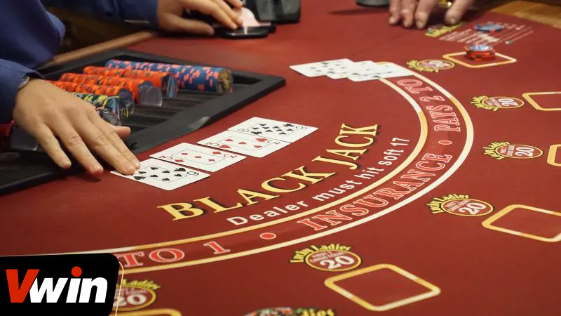
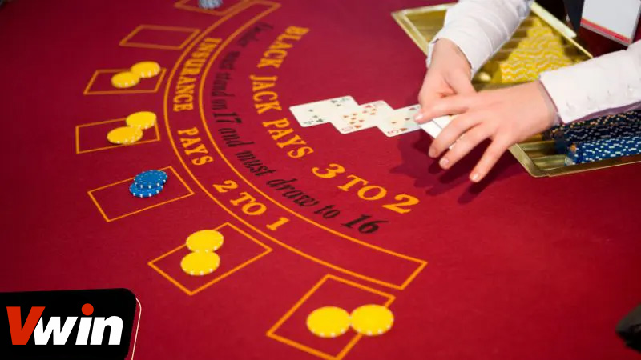
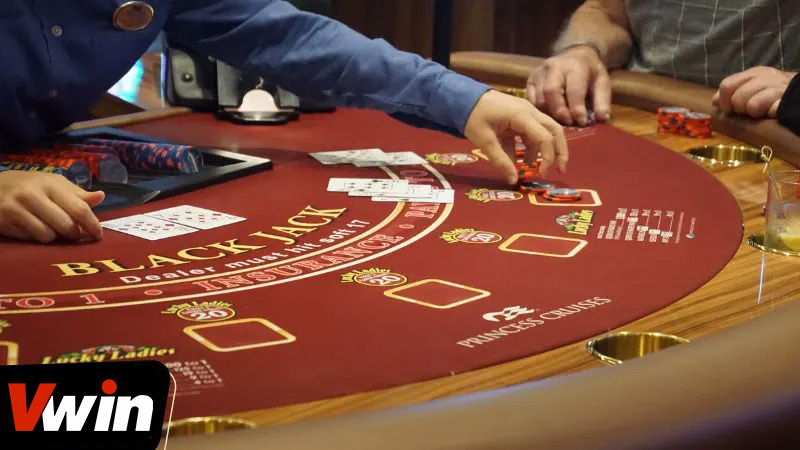

.png)
ĐÃ ĐĂNG TRÊN THÁNG BA 8, 2024 BỞI Vwin
Với những game thủ mới chập chững bước vào thế giới Blackjack trực tuyến, họ sẽ phải đối mặt với nhiều điều lạ lẫm và khó hiểu về cách thức chơi Blackjack. Dưới đây, chúng ta sẽ khám phá một số mẹo chơi Blackjack, bạn sẽ nhặt được bí kíp ăn tiền từ trò chơi này.
Để bước vào thế giới Blackjack trực tuyến một cách tự tin, trước hết, việc khám phá những chiến thuật chơi Blackjack sẽ là bước quan trọng và cần thiết mà người chơi không nên bỏ qua.
Nhờ áp dụng những mẹo chơi Blackjack cụ thể và chi tiết như vậy, người chơi sẽ tránh được sự bỡ ngỡ khi đối mặt với những tình huống khó khăn trong trò chơi. Điều này giúp tăng cường lòng tin và quyết đoán của người chơi để giải quyết mọi thách thức một cách thông minh và hiệu quả.
Trong trường hợp người chơi nhận được tổng cộng từ 3 đến 10 điểm từ hai lá bài đầu tiên, đây được xem là một tổng điểm không mong muốn do quá thấp. Trong tình huống này, lựa chọn tốt nhất và duy nhất cho người chơi chính là rút thêm bài. Lý do là với một tổng điểm như vậy, việc rút thêm bài sẽ không làm tăng nguy cơ bị vượt quá giới hạn điểm, giúp người chơi có cơ hội cải thiện tay bài của mình.
Xây dựng chiến thuật chơi cụ thể – mẹo chơi Blackjack
Nếu người chơi nhận được tổng điểm từ 16 đến 17 từ hai lá bài ban đầu, đây là tình huống khiến người chơi phải cân nhắc kỹ lưỡng. Dù tổng điểm này khá cao, nguy cơ thua cuộc vẫn tồn tại nếu quyết định giữ nguyên. Do đó, lựa chọn giữa việc dừng lại hoặc rút thêm bài phụ thuộc hoàn toàn vào chiến lược và quan sát của người chơi đối với diễn biến ván bài.
Khi người chơi được chia hai lá bài với tổng điểm từ 19 đến 20, đây là tín hiệu cho thấy họ đang nắm giữ một bộ bài mạnh. Trong tình huống này, khả năng cải thiện điểm số bằng cách rút thêm bài là cực kỳ thấp, vì rất khó để rút được một lá bài chỉ với 1 hoặc 2 điểm từ bộ bài lớn. Do đó, lựa chọn khôn ngoan nhất cho người chơi là giữ nguyên tổng điểm hiện tại. Rủi ro của việc rút thêm bài là cao, với khả năng cao dẫn đến việc vượt quá 21 điểm, hay còn gọi là “bust”.
Trong trường hợp người chơi tham gia chơi Blackjack mà thua 1-2 ván, họ thường có xu hướng tiếp tục chơi với hy vọng sẽ thu hồi được số tiền đã mất. Tuy nhiên, nếu thua liên tục từ đầu đến cuối, lựa chọn khôn ngoan nhất là dừng lại. Việc này giúp người chơi tránh rơi vào tình trạng mất kiểm soát và lỗ nặng hơn.
Biết điểm dừng – không đi quá xa bờ
Nguyên nhân thua có thể do kỹ năng và kinh nghiệm của người chơi chưa đủ. Dừng lại, xem xét lại chiến lược và trau dồi kỹ năng có thể là mẹo chơi Blackjack sáng suốt. Điều này giúp người chơi có cơ hội nâng cao khả năng quan sát, đồng thời cải thiện tâm lý khi đối mặt với thất bại, từ đó chuẩn bị tốt hơn cho những ván bài sau.
Trong môi trường cá cược, việc áp dụng mẹo chơi Blackjack đặt cược thông minh là điều thiết yếu để tối ưu hóa cơ hội chiến thắng. Ví dụ, khi bắt đầu với vốn 2 triệu đồng, người chơi có thể chọn bắt đầu với mức cược 200 nghìn đồng cho ván đầu. Nếu kết quả không như mong đợi và thua, mức cược cho ván tiếp theo vẫn duy trì ở 200 nghìn đồng. Quy trình này tiếp tục cho đến khi gặp phải thắng lợi.
Trong trường hợp chiến thắng ở ván đầu, thì mức cược cho ván thứ hai sẽ được tăng lên 400 nghìn đồng và tiếp tục tăng gấp đôi với mỗi chiến thắng tiếp theo. Quy tắc này giúp tạo điều kiện cho việc quản lý vốn một cách linh hoạt, giảm thiểu rủi ro trong khi tối ưu hóa cơ hội thu lợi nhuận từ những chiến thắng liên tiếp.
Chia trò chơi thành các nhóm riêng biệt
Từ những thông tin chi tiết và hữu ích mà bài viết cung cấp, người đọc chắc chắn sẽ có cái nhìn sâu sắc hơn về trò chơi Blackjack, bao gồm cả các mẹo chơi Blackjack để tăng cơ hội chiến thắng. Hy vọng rằng, với sự hướng dẫn này, các bạn sẽ tiếp tục khám phá và chinh phục thế giới cá cược một cách thông minh và hiệu quả. Cảm ơn các bạn đã dành thời gian theo dõi bài viết.
Vwin được công nhận là nhà cái cá cược hợp pháp - an toàn. Vwin còn có trụ sở chính và cá cược trực tiếp tại Phú Quốc.